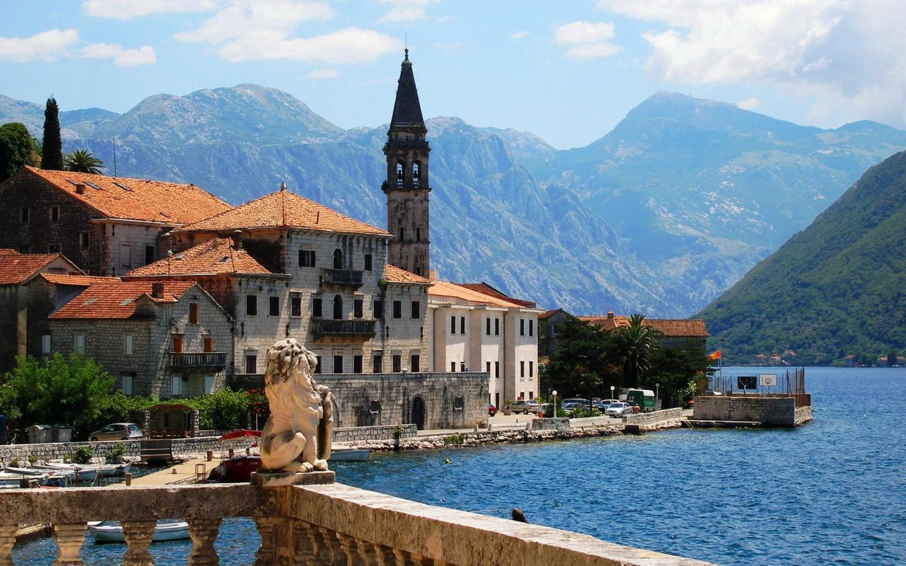

Республика Черногория расположена на Балканском полуострове. Черногория входила в состав Югославии. С 2010 года страна стала кандидатом в члены Евросоюза. В 2017 году республика стала членом НАТО. Столица и самый крупный город в Черногории – Подгорица, а Цетине является культурной и исторической столицей.
Официальное название — Австрийская Республика — государство в Центральной Европе. Занимает 94-е место в мире по численности населения и 112-е по территории. Столица — Вена. Федеративное государство, парламентская республика. С 7 января 2020 года федеральным канцлером является Себастьян Курц.
Швеция расположена в Северной Европе, в восточной и южной части Скандинавского полуострова. На западе Швеция граничит с Норвегией, на северо-востоке - с Финляндией, а с востока и юга ее омывают воды Балтийского моря и Ботнического залива. На юге проливы Эресунн, Каттегат и Скагеррак отделяют Швецию от Дании.

Норвегия - одна из 4 скандинавских стран, которые расположены на северных просторах Европы. На востоке она граничит со Швецией, Финляндией и Россией, на западе омывается Норвежским морем и Атлантическим океаном, на севере - Баренцевым морем, а на юге - Северным морем. Общая площадь страны составляет 386 958 кв. км.
Выберите страну
Черногория
Австрия
Швеция
Норвегия